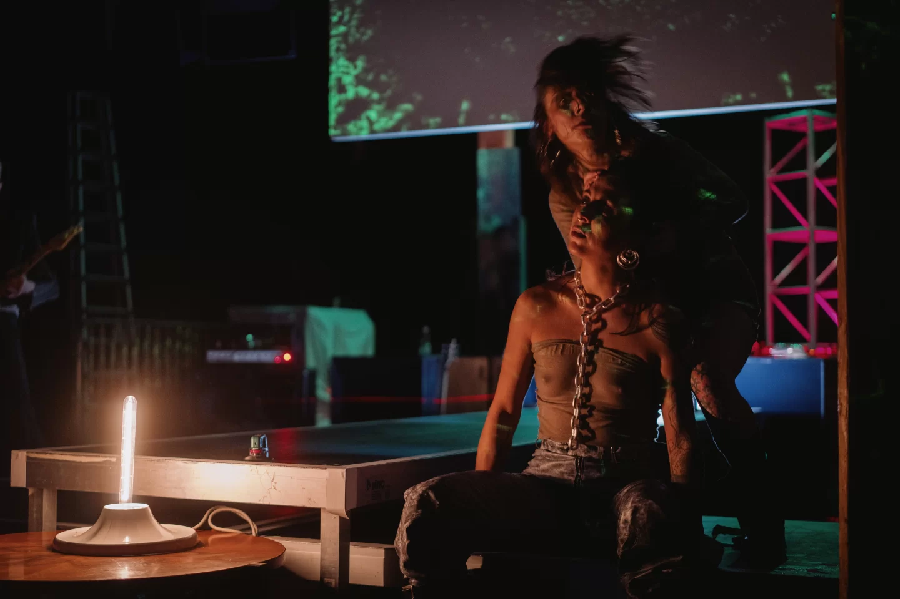
DJ and producer rooted in Lagos, Anu Cato blends Afrobeat percussion with hypnotic electronic textures. Her sets move between deep club pressure and open-air euphoria. A sound entirely her own — shaped by three continents and a refusal to stay still. Fri 23:00 · Main Stage · Afro-electronic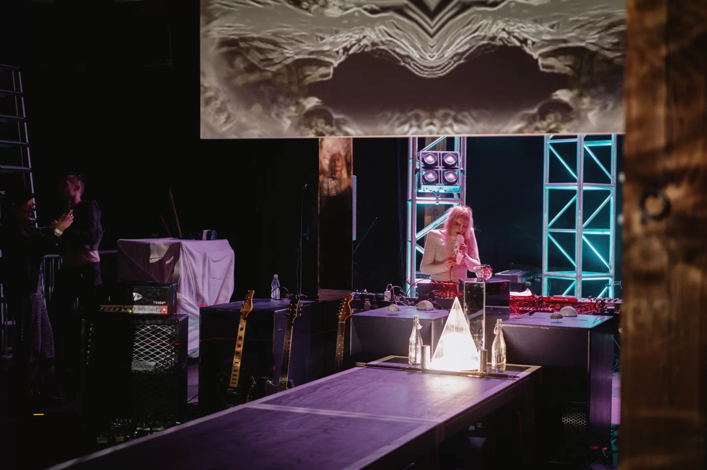
Born in Paris, raised between two continents, djadjamai fuses Amapiano grooves with hard-edged club production. Her mixes are dense, warm and relentlessly forward-moving. Every set is a lesson in how much space a single record can hold. Sat 00:30 · Stage 2 · Amapiano / Club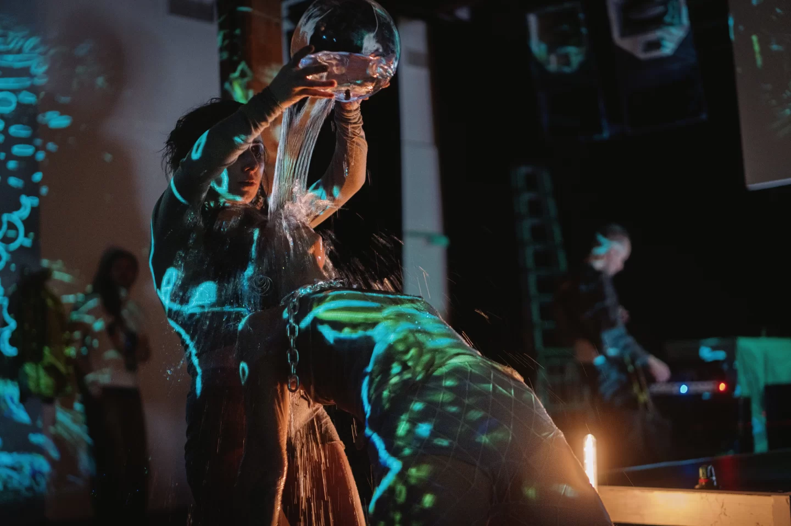
Berlin-based live act FUMU builds immersive performances from experimental bass, field recordings and modular synthesis. Expect a set that ruptures genre and leaves the floor rewired. FUMU doesn't perform so much as reconfigure the room entirely. Fri 01:00 · Stage 3 · Experimental bass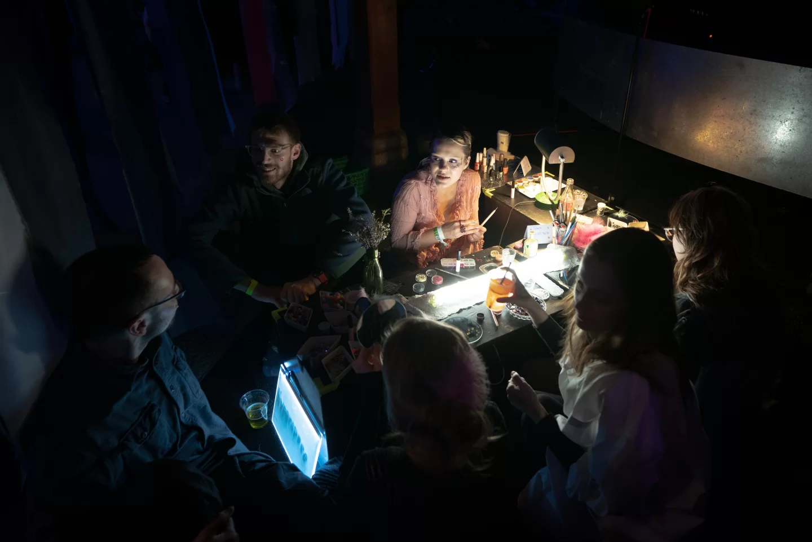
Vienna's Isi! is a force in the Baile Funk and Kuduro underground. She collects music obsessively across three continents and translates that energy into sets of pure joyful chaos. There is no one else doing it quite like this. Sat 22:00 · Stage 2 · Baile Funk / Kuduro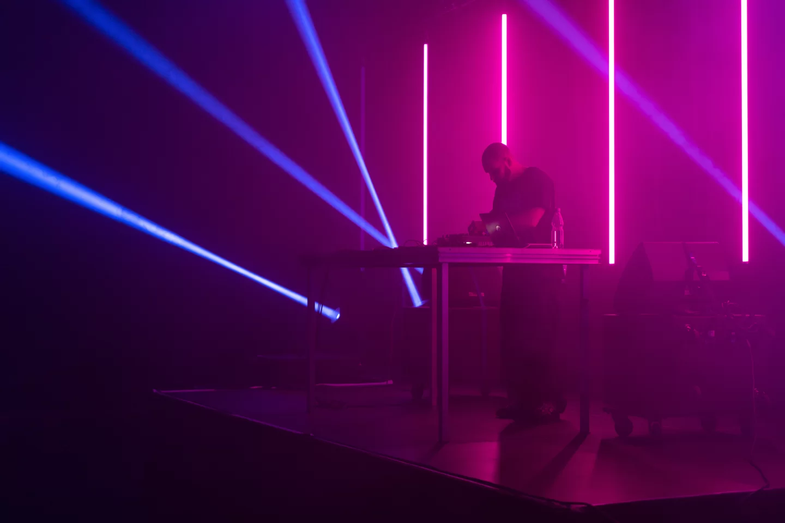
Producer from São Paulo whose hybrid take on Funk and club music has earned him spots across Europe and South America. GAto's tracks hit somewhere between carnival and crash. His music is fast, physical and completely impossible to ignore. Sun 00:00 · Main Stage · Funk / Hybridcore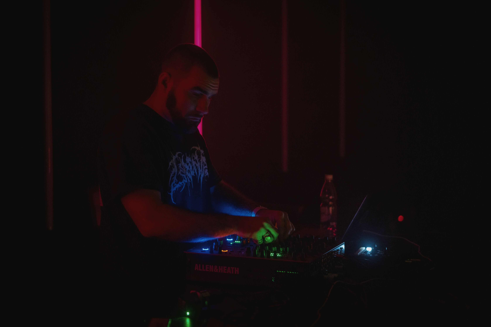
Nairobi-based DJ and selector NaKo draws on Genge, Afroclub and coastal rhythms to craft sets that feel deeply local yet radically global. She plays loud and means every beat. Her selections carry the dust and heat of East Africa into every room she enters. Fri 21:00 · Stage 2 · Genge / Afroclub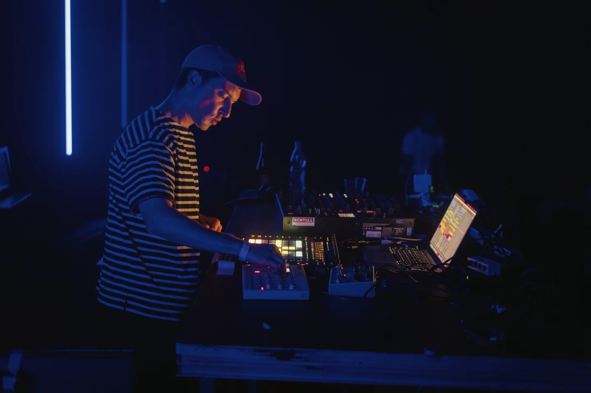
Seoul's YSEI bridges Korean noise traditions with peak-time techno infrastructure. Her live sets are precise, disorienting and viscerally physical — architecture built to collapse. YSEI is one of the most singular voices in contemporary club music. Sat 02:00 · Stage 3 · Techno / K-noise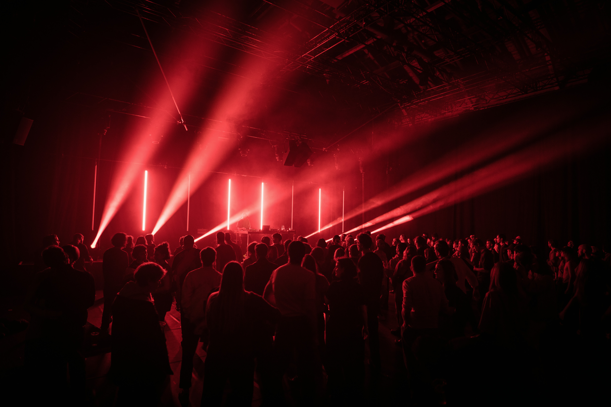
DJ and MC from London operating at the intersection of UKG, Drill and experimental club. Lumi.B's voice is as much an instrument as any record she plays — raw, confident, uncut. She commands floors through sheer presence and an encyclopaedic knowledge of sound. Fri 22:30 · Main Stage · UKG / Drill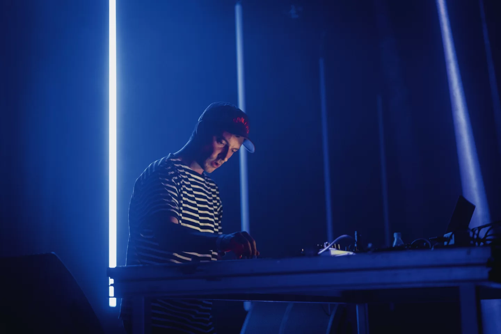
Accra-born dAko has become one of the most sought-after selectors in West African club culture. His Afrobeats sets are rooted in tradition but permanently pointed toward what's next. He plays with the patience of someone who knows exactly where the room is going. Sat 21:00 · Stage 2 · Afrobeats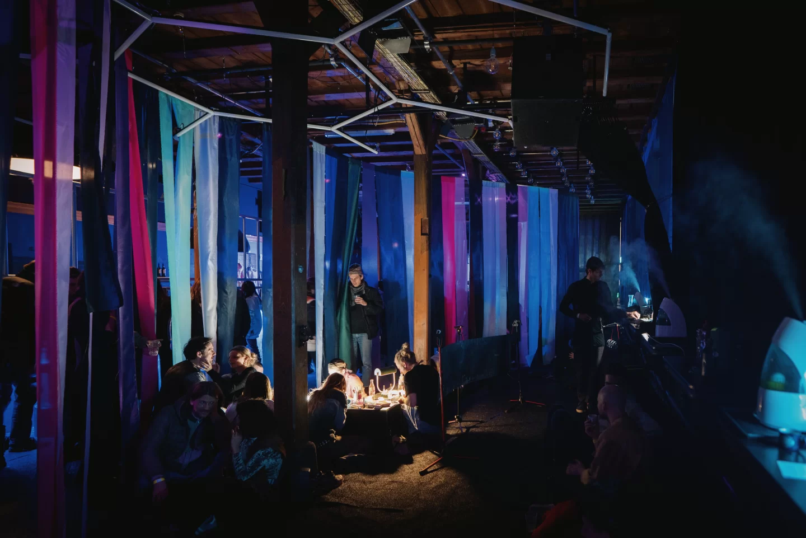
Amsterdam producer PRXMX works in the space between deconstructed club and broken techno. Dense, layered, difficult to categorise — his music demands full attention and repays it completely. Every release is a structural experiment that somehow still makes the body move. Sat 03:00 · Stage 3 · Deconstructed club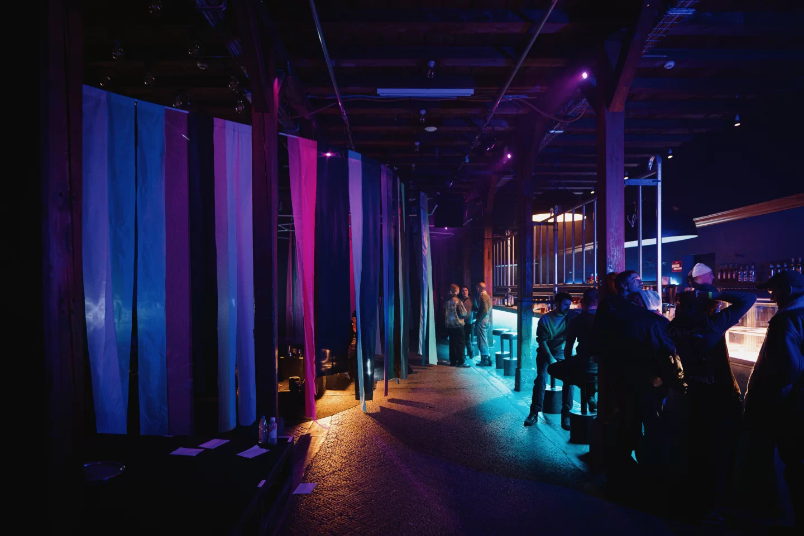
Safi! brings Electro Chaabi and Arabic club sounds from Cairo's underground into international circulation. Her sets are politically charged, rhythmically fierce and deeply rooted. She plays like the music has been waiting a long time to be heard at this volume. Fri 00:00 · Stage 2 · Electro Chaabi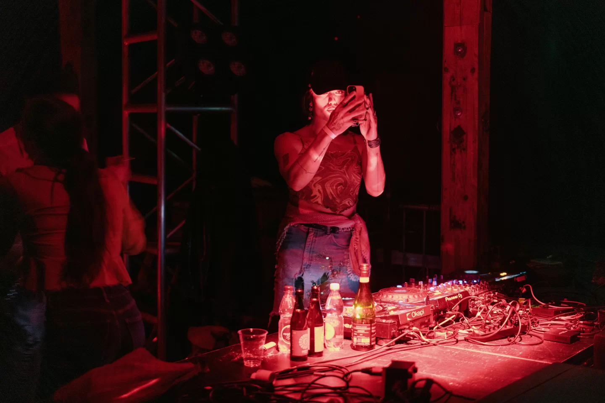
Melbourne-based live act CXLOE weaponises hyperpop and noise into performances that feel like software crashing in real time. Loud, fractured and completely alive. CXLOE operates at the edge of what recorded music can sustain and pushes further every time. Sat 23:30 · Stage 3 · Hyperpop / Noise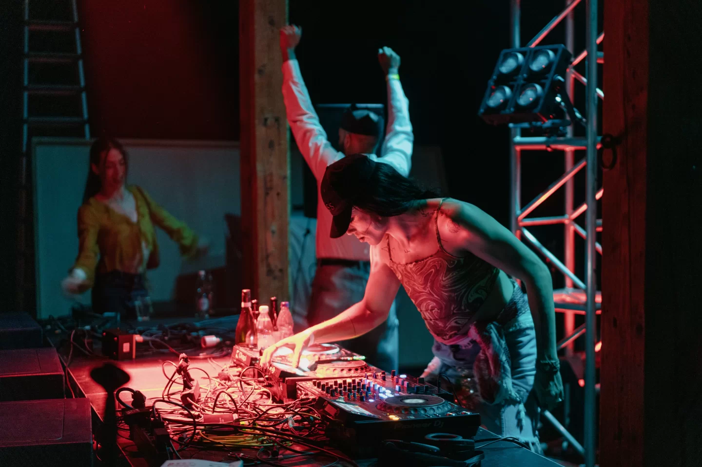
DJ and vocalist from Lagos, Nneka layers her own voice over Afro-soul selections to create something singular. Every performance is part set, part ceremony — deeply felt throughout. Her presence transforms a crowd into a congregation without anyone quite noticing when it happened. Sun 21:30 · Main Stage · Afro-soul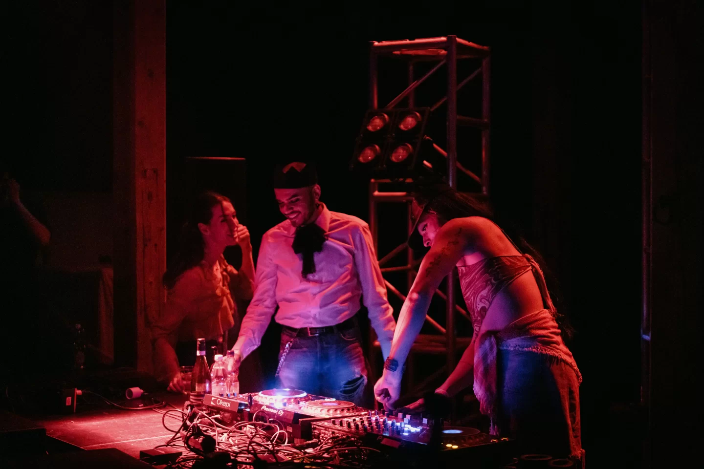
Mexico City's fLo pulls from Cumbia, regional sound system culture and contemporary club music to build sets of relentless groove. She plays like she has somewhere urgent to be and intends to take the entire room with her. Fri 23:30 · Stage 2 · Cumbia / Club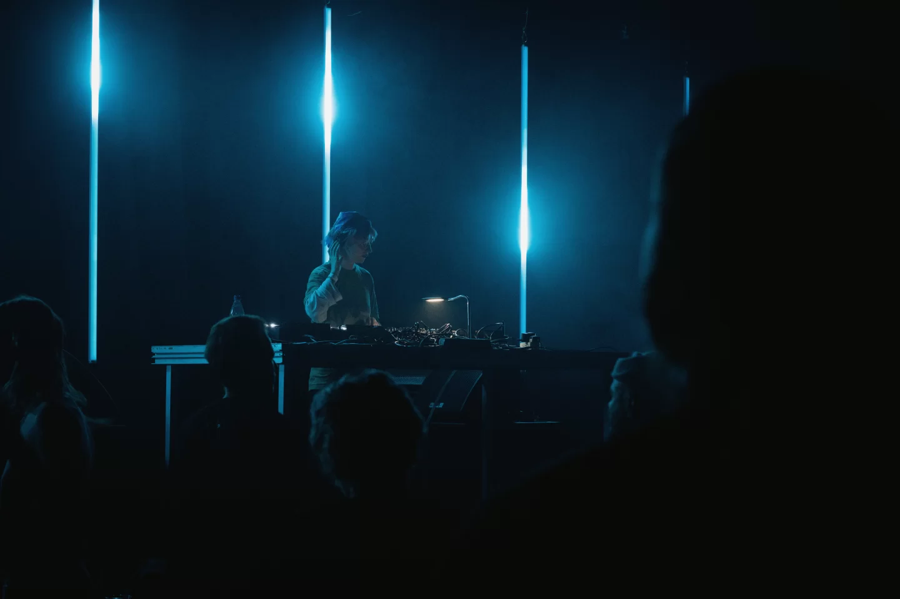
Lisbon-based live act XANA fuses Fado's aching melancholy with electronic production to create something hauntingly new. Her performances carry the weight of tradition and the lightness of total reinvention. XANA is one of Europe's most compelling voices right now. Sat 21:00 · Main Stage · Fado / Electronic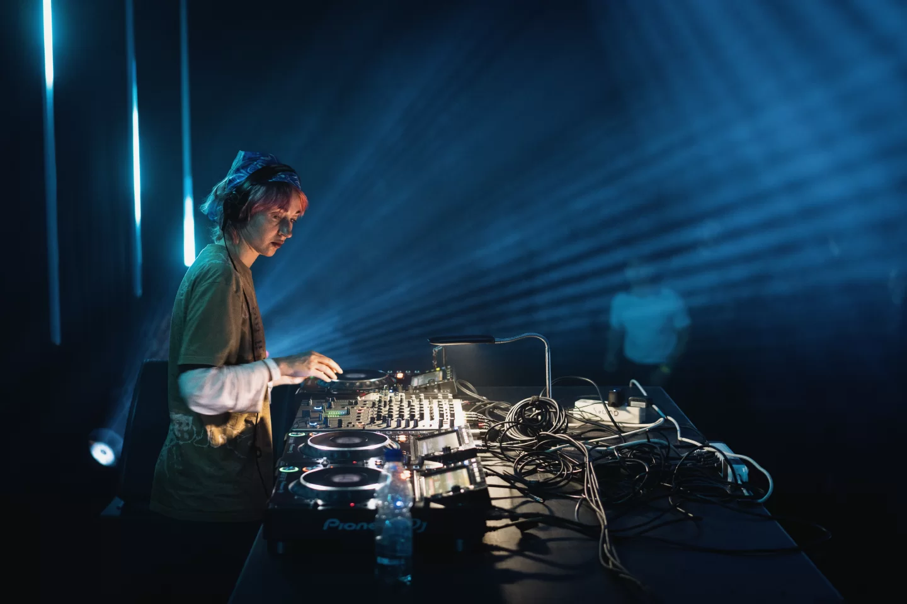
Buenos Aires DJ Pelo operates in the hard end of Perreo and hardcore, delivering sets that function like a physical confrontation. Sweaty, relentless and absolutely unafraid. He plays without mercy and the crowd gives it right back. Sun 01:00 · Stage 2 · Perreo / Hardcore